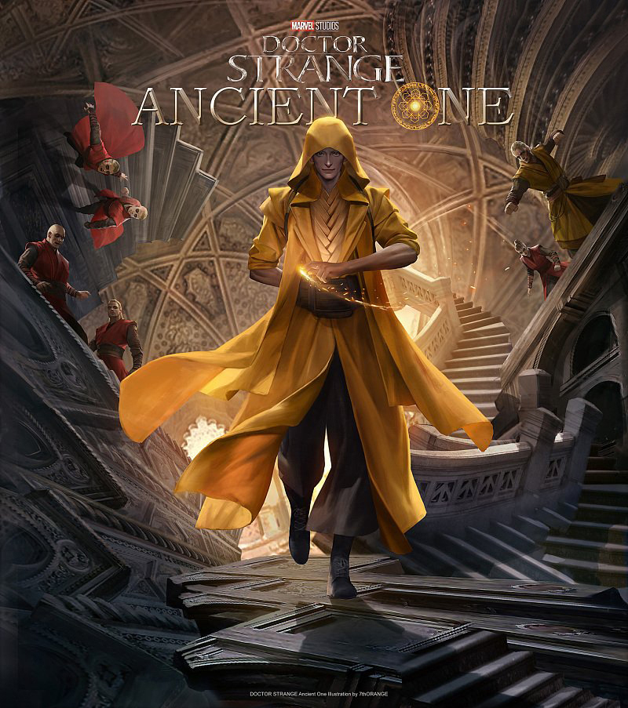
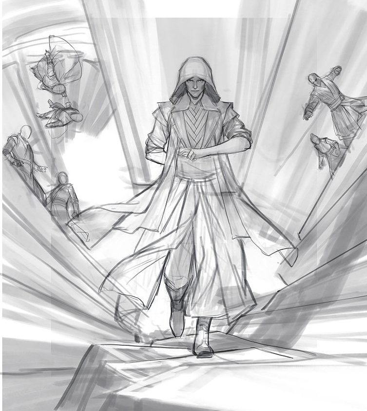
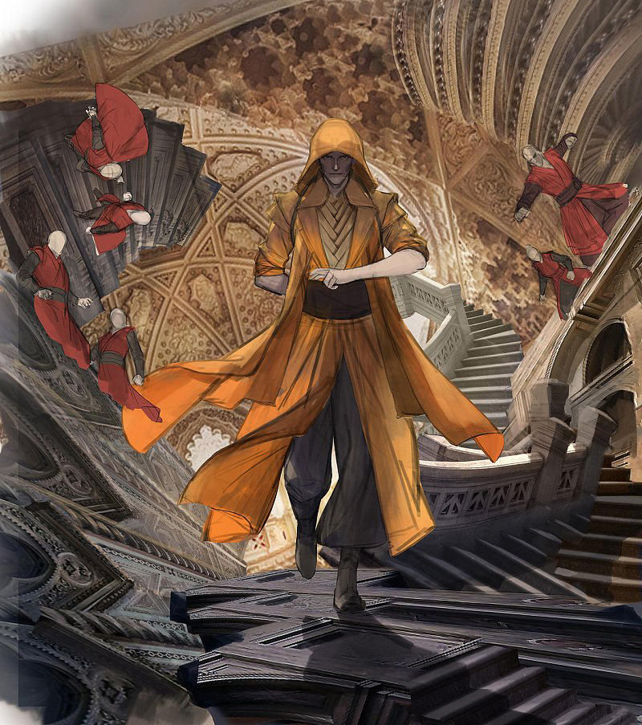

Photoshop绘制电影奇异博士人物古一法师
《奇异博士》是今年漫威影业新推出的超级英雄，片中古一法 师酷炫的魔法术和宗师气质给我们留下了深刻的印象这次的课 堂示范应学员的要求，示范了《奇异博士》古一法师的同人海 报，同时整理了一个创作的步骤和教程，和大家分享。
357
562
2017.02.22效果图
1、构图
这是整个画面故事的起源，如果我们要描绘一个带有情节的画面，这个步骤就是让我们来讲故事。
影片开场的一段打戏给我留下了深刻印象，古一法师以寡敌众，气定神闲之中尽显宗师风范，所以
这次的画面也希望可以体现这种感觉。在画面布局上，依然采用了传统的海报式构图，将主角放在
画面中心，周围粗略地勾勒出敌
2、线稿
构图确定后开始精稿，先用大油彩蜡笔将人物的线稿绘制出来，将原先比较凌乱的背景和背景中的敌人也整理。
3、填色
将线稿层设置为“正片叠底”，在下面新建图层，填充角色和背景的固有色。这个过程看似繁琐枯燥，但 却让后续的细化更加方便。实际上，填色的过程是把角色以及角色身上的衣服细节等逐一分层，便于我们 的细节刻画。
